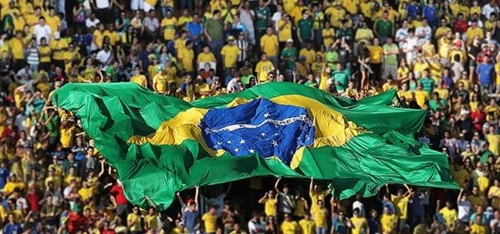

O Rei do Futebol, tricampeão mundial e maior ídolo da Seleção Brasileira.
Jogos: 92 | Gols: 77
O artilheiro da Copa de 2002 e um dos maiores atacantes da história.
Jogos: 98 | Gols: 62
Mágico com a bola nos pés, encantou o mundo com sua genialidade.
Jogos: 97 | Gols: 33
Pelé, Ronaldo e Ronaldinho são exemplos de jogadores que marcaram época na Seleção Brasileira. Com dribles desconcertantes, gols inesquecíveis e títulos importantes, esses craques ajudaram a construir a história gloriosa da camisa canarinho.
Cada um, ao seu estilo, fez história: Pelé com sua precisão e genialidade, Ronaldo com sua velocidade e faro de gol, e Ronaldinho com seu talento e magia dentro de campo.
